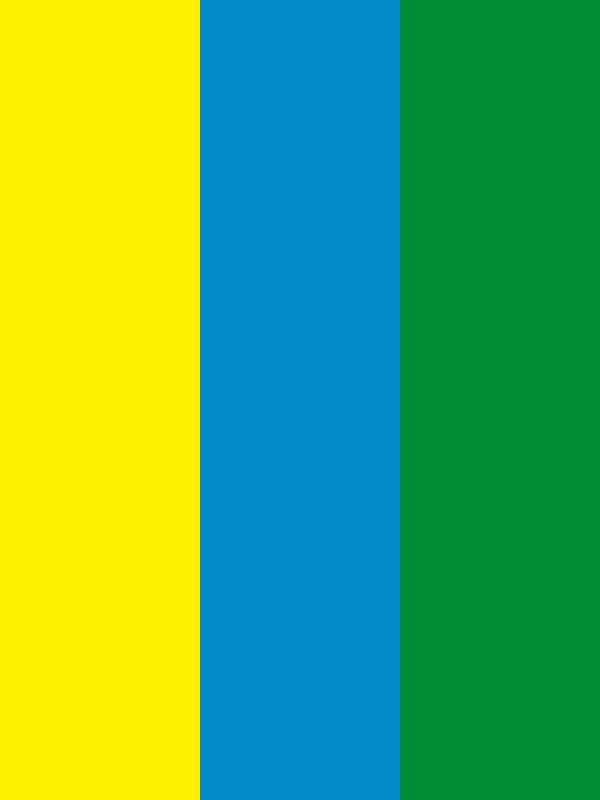
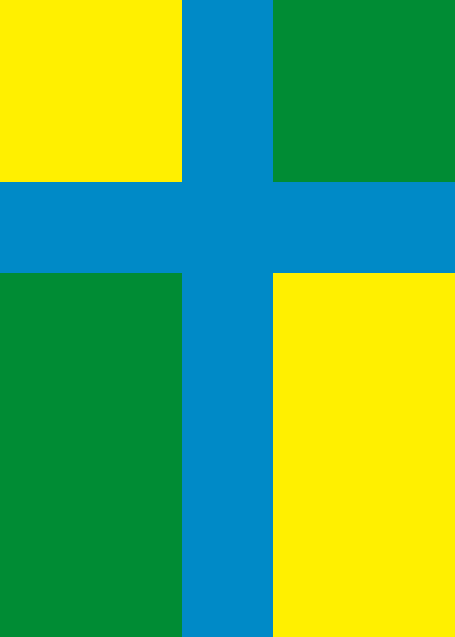

Atlas
Orisha
Flags
Cities
- Fazu Harbour
- Clarence
- Kyoukai
Economy
For self-consumption:
- Mining
Exports:
- Farm
- Manufacturing
- Arts & Crafts
- Magic
International Relations
Best friends with Minami
Good relations with:
- Hoga
- Horagawa
Not so good relations with Gaja, even though Kyoukai citizens get along well with Gajans.
Human Geography
Population: 200'000
Culture
Orishans believe life should enjoyed.
Kyoukai, Orisha is home to the Reign's religion.
Minami
Flags


Phyisical Geography
Cities
- Kinoko
- Tetsushi
- Sheep Islands
- Ghost Islands
- Temple Islands
- Portal Islands
Political Geography
History
- Orishuloj findas minaman islon - Orishuloj findas valormetalojn en minama islo - Orishuloj komencas Minaman kolonion - Minamuloj deklaras "indie"Economy
Colectivism Anarchy? But if the country exists, what's the government? Consensus government?
For self-consumption:
- Agriculture
- Arts & Crafts
Exports:
- Mathematics
- Mining
- Fishing
- Metallurgy
International Relations
Best friends with Orisha
Good friends with:
- Horagawa
- Feröo
Not so good relations with:
- Hoga
- Gaja
Human Geography
Population: 100'000
Culture
Minimalism? DIY?
The official language is Orishan using the old script
Gaja
Symbols
Physical Geography
Cities
- Ponneville
- New Kinoko
Political Geography
Gaja is a monarchy.
Economy
For self-consumption:
- Agriculture
- Mining
It exports art.
International Relations
It's best friends with Kyoukai, Orisha; and Feröo
It has not so good relations with Hoga and Minami
It doesn't go well with Horagawa and Orisha
Human Geography
Population: 500'000
Culture
Mostly vegetarian of some sort
They believe everyone is equal and at the same time, everyone is special
They speak the gajan language and write using the new orisha alphabet
Hoga
Symbols
Physical Geography
Cities
- Parokyo
- Kolejyo
Politcal Geography
Hoga is a monarchy.
Economy
Agriculture for self-consumption
Exports:
- Mathematics
- Metallurgy
International Relations
It's best friends with Horagawa
It's on good terms with Orisha
It has not so good relations with Minami
It doesn't go well with Feröo and Gaja
Human Geography
Population: 800'000
They believe that, if one can have what they want. If one wants, one have to work and fight for it.
Hoga people speak and write Keble.
Horagawa
Flags
 Physical Geography
Cities
- Mipu
- Mina
- Alexa
Political Geography
Horagawa is a monarchy
Economy
It exports:
- Agriculture
- Mining
- Manufacturing
International Relations
It's best friends with Hoga and Feröo
It's on good terms with Orisha and Minami
It's rivals with Gaja
Human Geography
Population: 1'000'000
In Horagawa, people believe that life is too short so we should as much as possible.
Even though Horagawa is an old colony of Orisha, many customs do not exist anymore.
The influence of the existing Alexa culture is still strong.
Most Horagawans speak Kitenlan, which can be written with both Keble and old Orisha. In Mipu, people speak Kitenlan and Orishan (old alphabet).
Feröo
Flag
Physical Geography
Cities
- Reykyo
- Ilajo
Political Geography
Similar to Minami
History
TODO
Economy
Agriculture for self-consumption
Exports mining
International Relations
In this order:
- Gaja
- Minami
- Orisha
- Hoga
- Horagawa
Human Geography
Population: 100'000
In Feröo, people believe life is simple.
Life is marked by the conflict between Reykyo and Ilajo.